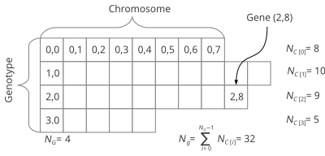

Class Genotype<G extends Gene<?,G> >
java.lang.Object
io.jenetics.Genotype<G>
- All Implemented Interfaces:
BaseSeq<Chromosome<G>>, Factory<Genotype<G>>, Verifiable, Serializable, Iterable<Chromosome<G>>, RandomAccess
public final class Genotype<G extends Gene<?,G>>
extends Object
implements BaseSeq<Chromosome<G>>, Factory<Genotype<G>>, Verifiable, Serializable
The central class the GA is working with, is the
The code snippet above creates a genotype with the same structure as shown in
the figure above. In this example the
Genotype. It is the
structural representative of an individual. This class is the encoded problem
solution with one to many Chromosome.

The chromosomes of a genotype don't have to have necessarily the same size. It is only required that all genes are from the same type and the genes within a chromosome have the same constraints; e.g., the same min- and max values for the genes value.final Genotype<DoubleGene> genotype = Genotype.of(
DoubleChromosome.of(0.0, 1.0, 8),
DoubleChromosome.of(1.0, 2.0, 10),
DoubleChromosome.of(0.0, 10.0, 9),
DoubleChromosome.of(0.1, 0.9, 5)
);
DoubleGene has been chosen as
a gene type.- Since:
- 1.0
- Version:
- 7.2
- See Also:
- Implementation Note:
- This class is immutable and thread-safe.
-
Method Summary
Modifier and TypeMethodDescriptionReturn the first chromosome.booleangene()intReturn the number of genes this genotype consists of.get(int index) Return the chromosome at the given index.inthashCode()booleanisValid()Test if this genotype is valid.intlength()Getting the number of chromosomes of this genotype.Return a new, random genotype by creating new, random chromosomes (calling theFactory.newInstance()method) from the chromosomes of this genotype.of(Chromosome<G> first, Chromosome<G>... rest) Create a newGenotypefrom a given array ofChromosomes.of(Factory<? extends Chromosome<G>> factory, int n) Create a newGenotypewhich consists ofnchromosomes, which are created by the givenfactory.of(Iterable<? extends Chromosome<G>> chromosomes) Create a newGenotypefrom a given array ofchromosomes.slice(int fromIndex, int toIndex) Create a new Genotype which consists of the chromosomes from the givenfromIndex(inclusively) to the giventoIndex(exclusively).toString()Methods inherited from interface BaseSeq
forEach, isEmpty, iterator, listIterator, nonEmpty, spliterator, stream
-
Method Details
-
get
Return the chromosome at the given index. It is guaranteed that the returned chromosome is not null. -
length
-
chromosome
Return the first chromosome. This is an alias forfinal Genotype<DoubleGene> gt = ...; final Chromosome<DoubleGene> chromosome = gt.get(0);- Returns:
- The first chromosome.
- Since:
- 5.2
-
gene
Return the firstGeneof the firstChromosomeof thisGenotype. This is an alias forfinal Genotype<DoubleGene> gt = ...; final DoubleGene gene = gt.get(0).get(0);- Returns:
- the first
Geneof the firstChromosomeof thisGenotype. - Since:
- 5.2
-
geneCount
Return the number of genes this genotype consists of. This is the sum of the number of genes of the genotype chromosomes.- Returns:
- Return the number of genes this genotype consists of
-
isValid
Test if this genotype is valid. A genotype is valid if all itsChromosomes are valid.- Specified by:
isValidin interfaceVerifiable- Returns:
- true if this genotype is valid, false otherwise.
-
slice
Create a new Genotype which consists of the chromosomes from the givenfromIndex(inclusively) to the giventoIndex(exclusively). This method creates a view of the underlying chromosomes.- Parameters:
fromIndex- the start chromosome index, inclusivelytoIndex- the end chromosome index, exclusively- Returns:
- a new genotype consisting of the chromosomes within the given indexes
- Throws:
IndexOutOfBoundsException- for an illegal end point index value (fromIndex < 0 || toIndex > length() || fromIndex > toIndex).- Since:
- 7.2
-
newInstance
Return a new, random genotype by creating new, random chromosomes (calling theFactory.newInstance()method) from the chromosomes of this genotype.- Specified by:
newInstancein interfaceFactory<G extends Gene<?,G>> - Returns:
- a new instance of type T
-
hashCode
-
equals
-
toString
-
of
@SafeVarargs public static <G extends Gene<?,G>> Genotype<G> of(Chromosome<G> first, Chromosome<G>... rest) Create a newGenotypefrom a given array ofChromosomes.- Type Parameters:
G- the gene type- Parameters:
first- the firstChromosomeof theGenotyperest- the rest of the genotype chromosomes.- Returns:
- a new
Genotypefrom the given chromosomes - Throws:
NullPointerException- ifchromosomesisnullor one of its elements.- Since:
- 3.0
-
of
Create a newGenotypewhich consists ofnchromosomes, which are created by the givenfactory. This method can be used for easily creating a gene matrix. The following example will create a 10x5DoubleGenematrix.final Genotype<DoubleGene> gt = Genotype .of(DoubleChromosome.of(0.0, 1.0, 10), 5);- Type Parameters:
G- the gene type- Parameters:
factory- the factory which creates the chromosomes this genotype consists ofn- the number of chromosomes this genotype consists of- Returns:
- new
Genotypecontainingnchromosomes - Throws:
IllegalArgumentException- ifn < 1NullPointerException- if thefactoryisnull- Since:
- 3.0
-
of
Create a newGenotypefrom a given array ofchromosomes.- Type Parameters:
G- the gene type- Parameters:
chromosomes- theChromosomes the returned genotype consists of- Returns:
- a new
Genotypefrom the given chromosomes - Throws:
NullPointerException- ifchromosomesisnullor one of its elements.IllegalArgumentException- ifchromosome.length() < 1- Since:
- 3.0
-